library(tidyverse)
library(here)
library(dplyr)
library(car)
library(PNWColors)
library(performance)
library(ggpubr)Okinawa Bulk Coral Physiology 2025
Setup
Load libraries
Assign species colors for all plots
sp_cols <- c(
"Acropora hyacinthus" = '#d8aedd',
"Echinopora lamellosa" = '#ba7999',
"Favites complanata" = '#dd4124',
"Montipora aequituberculata" = '#ed8b00',
"Montipora vietnamensis" = '#efbc82',
"Pachyseris rugosa" = '#edd746',
"Pocillopora eydouxi" = '#d0e2af',
"Porites cylindrica" = '#45681e',
"Porites rus" = '#7bbcd5',
"Turbinaria frondens" = '#00496f'
)Function to calculate SE throughout
se_fun <- function(x) {
n <- sum(!is.na(x))
if (n <= 1) return(NA_real_)
sd(x, na.rm = TRUE) / sqrt(n)
}Dry weight
Load data
avg_DW <- read.csv(here("Data", "Physiology", "Average_Dry_Weight.csv"))
avg_DW <- avg_DW %>% rename(full_species = species_long)#code to calculate average dry weight per fragment
#needed initially but not after writing average dry weight datasheet
# #read in metadata
# phys_meta <- read.csv(here("Data", "Physiology", "Physio_meta.csv"))
#
# DW <- read.csv(here("Data", "Physiology", "Dry_Weight_Oki2025.csv"))
#
# DW <- DW %>% left_join(phys_meta, by = "frag_ID")
#
# #calculate dry weight
# DW <- DW %>%
# mutate(dw_g_mL = dry_pan - pan_weight,
# dw_total_g = dw_g_mL*blastate_vol_mL,
# dw_g_cm2 = dw_total_g/SA_cm2,
# dw_mg_cm2 = dw_g_cm2*1000)
#
# #average across the reps
# avg_DW <- DW %>%
# group_by(frag_ID) %>%
# summarise(dw_g_mL = mean(dw_g_mL),
# dw_total_g = mean(dw_total_g),
# dw_g_cm2 = mean(dw_g_cm2),
# dw_mg_cm2 = mean(dw_mg_cm2)) %>%
# left_join(phys_meta, by = "frag_ID")
#
# write.csv(avg_DW, here("Data", "Physiology", "Average_Dry_Weight.csv"), row.names = FALSE)Generate dry weight summary data
dw_summary <- avg_DW %>%
group_by(full_species) %>%
summarise(
n = sum(!is.na(dw_mg_cm2)),
mean = mean(dw_mg_cm2, na.rm = TRUE),
se = se_fun(dw_mg_cm2),
.groups = "drop")See if there is a difference between species
DW.mod.spp <- lm(dw_mg_cm2~full_species, data = avg_DW)
Anova(DW.mod.spp)Anova Table (Type II tests)
Response: dw_mg_cm2
Sum Sq Df F value Pr(>F)
full_species 61304 6 5.7214 8.497e-05 ***
Residuals 112506 63
---
Signif. codes: 0 '***' 0.001 '**' 0.01 '*' 0.05 '.' 0.1 ' ' 1summary(DW.mod.spp)
Call:
lm(formula = dw_mg_cm2 ~ full_species, data = avg_DW)
Residuals:
Min 1Q Median 3Q Max
-73.710 -20.653 -6.251 14.642 158.103
Coefficients:
Estimate Std. Error t value Pr(>|t|)
(Intercept) 71.141 13.363 5.324 1.44e-06 ***
full_speciesEchinopora lamellosa 6.493 18.899 0.344 0.732326
full_speciesFavites complanata 41.329 18.899 2.187 0.032473 *
full_speciesMontipora aequituberculata -1.205 18.899 -0.064 0.949357
full_speciesPocillopora eydouxi -12.263 18.899 -0.649 0.518789
full_speciesPorites rus 76.938 18.899 4.071 0.000133 ***
full_speciesTurbinaria frondens 39.417 18.899 2.086 0.041064 *
---
Signif. codes: 0 '***' 0.001 '**' 0.01 '*' 0.05 '.' 0.1 ' ' 1
Residual standard error: 42.26 on 63 degrees of freedom
Multiple R-squared: 0.3527, Adjusted R-squared: 0.2911
F-statistic: 5.721 on 6 and 63 DF, p-value: 8.497e-05check_model(DW.mod.spp)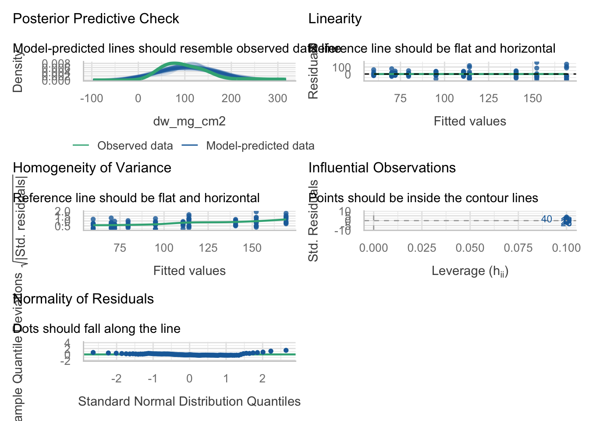
Emmeans comparisons
emm_obj <- emmeans::emmeans(DW.mod.spp, ~ full_species)
emm_pairs <- pairs(emm_obj)
#a, a, a, a, ab, ab, b, b
emm_tbl <- as_tibble(summary(emm_obj, infer = TRUE)) %>% mutate(full_species = fct_reorder(full_species, emmean))
emm_plot <- ggplot(emm_tbl, aes(x = emmean, y = full_species, color = full_species)) +
geom_point() +
geom_errorbar(aes(xmin = lower.CL, xmax = upper.CL), width = 0.2) +
theme_bw(base_size = 22) +
theme(legend.position = "none", axis.text.y = element_text(face = "italic"))+
scale_color_manual(values = sp_cols, ) +
labs(x = "Emmean", y = "Species")
emm_plot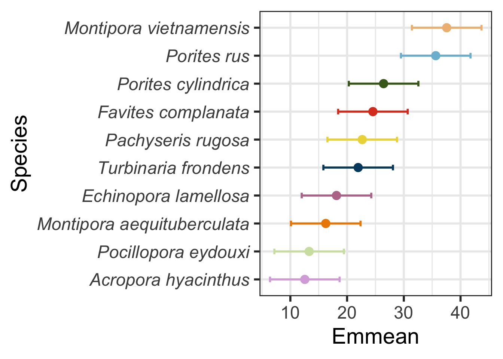
#ggsave(here("Output", "Physiology","dw_emmeans.pdf"), device = "pdf", height = 8, width = 8, emm_plot)Reorder based on mean values and then plot dry weight
means <- avg_DW %>% group_by(species) %>% summarize(m = mean(dw_mg_cm2, na.rm = TRUE), .groups = "drop")
avg_DW_ordered <- avg_DW %>% left_join(dw_summary, by = "full_species") %>% mutate(full_species = fct_reorder(full_species, mean)) # ascending by mean
dw_plot <- ggplot() +
geom_jitter(data = avg_DW_ordered, aes(x = full_species, y = dw_mg_cm2, color = full_species), width = 0.15, alpha = 0.8) +
stat_summary(data = avg_DW_ordered, aes(x = full_species, y = dw_mg_cm2), geom = "text", fun = max, vjust = -0.5, size = 8,
label = c("a", "a", "a", "a", "ab", "ab", "b"))+
geom_errorbar(data = dw_summary, aes(x = full_species, ymin = mean - se, ymax = mean + se), width = 0.2, linewidth = 0.6) +
geom_point(data = dw_summary, aes(x = full_species, y = mean), size = 2) +
theme_bw(base_size = 22) +
theme(legend.position = "right", axis.text.x = element_blank(), axis.title.x = element_blank()) +
#theme(legend.position = "none", axis.text.x = element_text(angle = 45, hjust=1, face = "italic")) +
scale_color_manual(values = sp_cols, labels = function(x) parse(text = paste0("italic('", gsub("'", "\\\\'", x), "')")))+
ylim(25,325)+
labs(x = "Species", color = "Species",
y = expression("Tissue biomass" ~ (mg ~ cm^{-2})))
dw_plot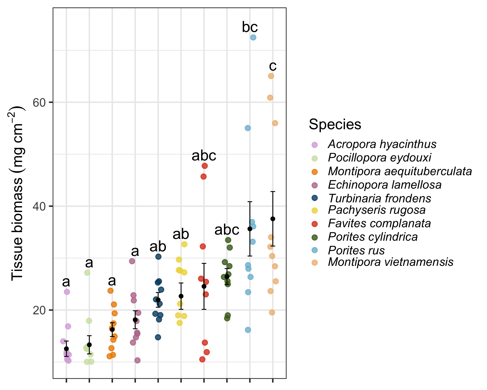
ggsave(here("Output", "Physiology", "dryweight_species_jitter.pdf"), dw_plot, h = 5, w = 10)Chlorophyll a
Initial processing - only needed once
#read in data
#data is corrected for blank rates and surface area and blanks are removed
#uncomment this section if you need to redo prep for chla dataframe
# chla_plate1 <- read.csv(here("Data", "ChlaSpec", "oki_chla_plate1_summary.csv"))
# chla_plate2 <- read.csv(here("Data", "ChlaSpec", "oki_chla_plate2_summary.csv"))
# chla_plate3 <- read.csv(here("Data", "ChlaSpec", "oki_chla_plate3_summary.csv"))
# chla_plate4 <- read.csv(here("Data", "ChlaSpec", "oki_chla_plate4_summary.csv"))
#
# # concatenate all plates
# chla_all_corr <- bind_rows(chla_plate1,chla_plate2,chla_plate3,chla_plate4)
# chla_all_corr <- chla_all_corr %>% rename(frag_ID = Sample.Name)
#
# #add metadata, SA, and symbiont density to calc chla/sym
# SA_frag_final <- read.csv(here("Data","SurfaceArea","SA_fragments_final.csv"))
# chla_meta <- SA_frag_final %>% filter(Frag_type == "physio") %>%
# select(frag_ID, full_species, species, calc_SA)
# avg_sym <- read.csv(here("Data", "Physiology", "Average_Sym_Density.csv"))
# sym_select <- avg_sym %>%
# select(frag_ID, sym_total)
#
# chla_data <- left_join(chla_all_corr, chla_meta, by = "frag_ID") %>%
# rename(SA_cm2 = calc_SA)
# chla_data <- left_join(chla_data, sym_select, by = "frag_ID") #only have 7 species here for sym so will have to subset
#
# #save data
# write_csv(chla_data, here("Data", "Physiology", "Chla_avg.csv"))Read in data
chla_avg <- read.csv(here("Data", "Physiology", "Chla_avg.csv"))
chla_avg <- chla_avg %>%
#filter(full_species %in% sp_keep) %>%
filter(frag_ID != "C07") %>% #remove outlier frag
mutate(chla_ug_total = (chla_mean*50)) %>% #multiply by slurry volume to get total chla
mutate(chla_pg_sym = (chla_ug_total/sym_total)*1000000) #divide by total symbionts and multiply by 1000000 to get pgChla/cm2
Make chla summary data
#summarize chla/cm2 by species
chla_summary <- chla_avg %>%
group_by(full_species) %>%
summarise(n = sum(!is.na(chla_ug_cm2_mean)),
mean = mean(chla_ug_cm2_mean, na.rm = TRUE),
se = se_fun(chla_ug_cm2_mean),
.groups = "drop")See if there’s a difference between species for chla
chla.mod.spp <- lm(chla_ug_cm2_mean~full_species, data = chla_avg)
Anova(chla.mod.spp)Anova Table (Type II tests)
Response: chla_ug_cm2_mean
Sum Sq Df F value Pr(>F)
full_species 858.42 9 6.6227 3.412e-07 ***
Residuals 1281.77 89
---
Signif. codes: 0 '***' 0.001 '**' 0.01 '*' 0.05 '.' 0.1 ' ' 1summary(chla.mod.spp)
Call:
lm(formula = chla_ug_cm2_mean ~ full_species, data = chla_avg)
Residuals:
Min 1Q Median 3Q Max
-8.1021 -1.7306 -0.4198 1.5910 14.9032
Coefficients:
Estimate Std. Error t value Pr(>|t|)
(Intercept) 6.97601 1.20008 5.813 9.43e-08 ***
full_speciesEchinopora lamellosa 0.46737 1.69717 0.275 0.78366
full_speciesFavites complanata -0.09481 1.74367 -0.054 0.95676
full_speciesMontipora aequituberculata -0.07954 1.69717 -0.047 0.96273
full_speciesMontipora vietnamensis 2.21824 1.69717 1.307 0.19457
full_speciesPachyseris rugosa 1.16149 1.69717 0.684 0.49552
full_speciesPocillopora eydouxi -2.18219 1.69717 -1.286 0.20185
full_speciesPorites cylindrica 6.87202 1.69717 4.049 0.00011 ***
full_speciesPorites rus 7.42070 1.69717 4.372 3.32e-05 ***
full_speciesTurbinaria frondens 2.36170 1.69717 1.392 0.16753
---
Signif. codes: 0 '***' 0.001 '**' 0.01 '*' 0.05 '.' 0.1 ' ' 1
Residual standard error: 3.795 on 89 degrees of freedom
Multiple R-squared: 0.4011, Adjusted R-squared: 0.3405
F-statistic: 6.623 on 9 and 89 DF, p-value: 3.412e-07check_model(chla.mod.spp)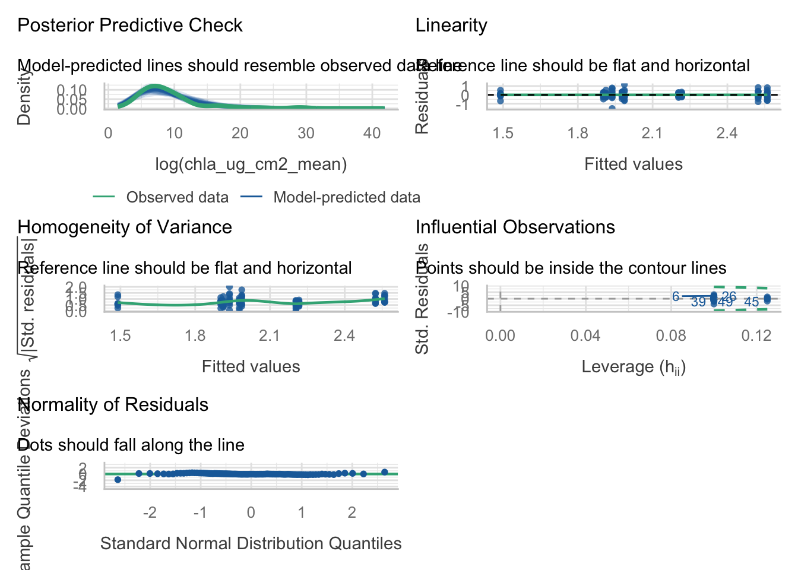
Generate emmeans comparisons and plot
emm_obj <- emmeans::emmeans(chla.mod.spp, ~ full_species)
emm_pairs <- pairs(emm_obj)
#"a", "a", "a", "a", "a", "a", "ab", "ab", "b", "b"
emm_tbl <- as_tibble(summary(emm_obj, infer = TRUE)) %>% mutate(full_species = fct_reorder(full_species, emmean))
emm_plot <- ggplot(emm_tbl, aes(x = emmean, y = full_species, color = full_species)) +
geom_point() +
geom_errorbar(aes(xmin = lower.CL, xmax = upper.CL), width = 0.2) +
theme_bw(base_size = 22) +
theme(legend.position = "none", axis.text.y = element_text(face = "italic"))+
scale_color_manual(values = sp_cols, ) +
labs(x = "Emmean", y = "Species")
emm_plot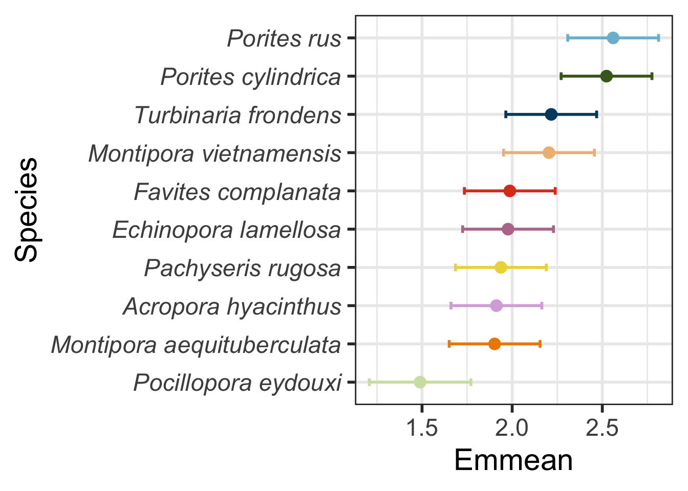
#ggsave(here("Output", "Physiology","chla_cm2_emmeans.pdf"), device = "pdf", height = 8, width = 8, emm_plot)Order and plot data by species
#reorder based on mean values
means <- chla_avg %>% group_by(species) %>% summarize(m = mean(chla_ug_cm2_mean, na.rm = TRUE), .groups = "drop")
chla_avg_ordered <- chla_avg %>%
left_join(chla_summary, by = "full_species") %>%
mutate(full_species = fct_reorder(full_species, mean)) # ascending by mean
chla_plot <- ggplot() +
geom_jitter(data = chla_avg_ordered, aes(x = full_species, y = chla_ug_cm2_mean, color = full_species), width = 0.15, alpha = 0.8) +
geom_errorbar(data = chla_summary, aes(x = full_species, ymin = mean - se, ymax = mean + se), width = 0.2, linewidth = 0.6)+
geom_point(data = chla_summary, aes(x = full_species, y = mean), size = 2) +
stat_summary(data = chla_avg_ordered, aes(x = full_species, y = chla_ug_cm2_mean), geom = "text", fun = max, vjust = -0.5, size = 8,
label = c("a", "a", "a", "a", "a", "a", "ab", "ab", "b", "b"))+
theme_bw(base_size = 22)+
theme(legend.position = "right", axis.text.x = element_blank(), axis.title.x = element_blank()) +
#theme(legend.position = "none", axis.text.x = element_text(angle = 45, hjust=1, face = "italic")) +
scale_color_manual(values = sp_cols, labels = function(x) parse(text = paste0("italic('", gsub("'", "\\\\'", x), "')")))+
labs(x = "Species", color = "Species", y = expression("Chlorophyll a content" ~ (mu*g ~ cm^{-2}))) +
ylim(0,31)
chla_plot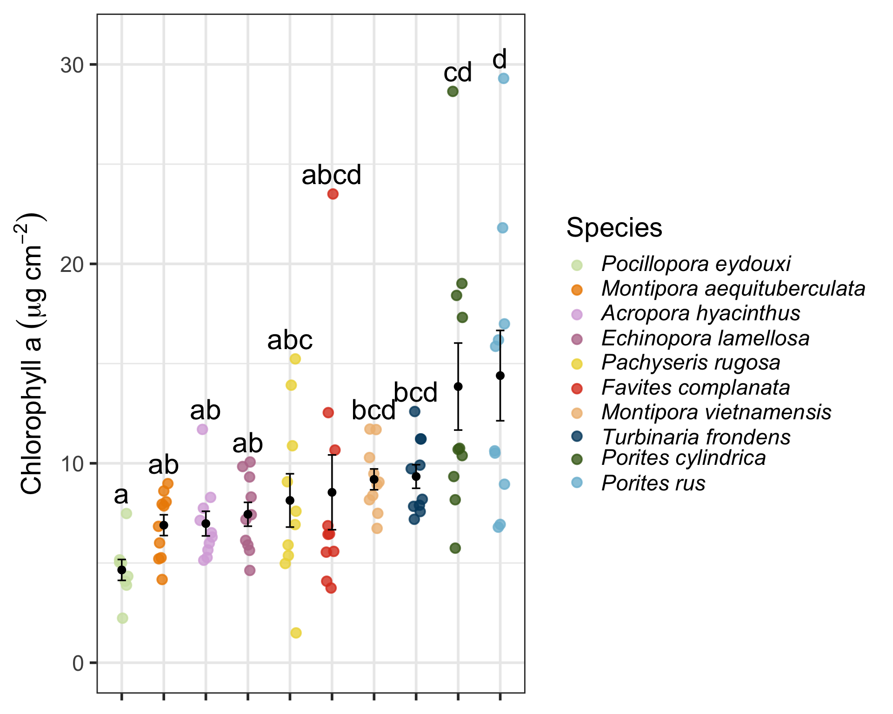
ggsave(here("Output", "Physiology", "chla_cm2_species_jitter.pdf"), chla_plot, h = 5, w = 10)Chla/symbiont
Only seven species for sym data for now so edit dataframe accordingly
sp_keep <- c("Acropora hyacinthus","Echinopora lamellosa", "Favites complanata","Montipora aequituberculata","Pocillopora eydouxi","Porites rus","Turbinaria frondens")
chla_7sp <- chla_avg %>%
filter(full_species %in% sp_keep) %>%
filter(frag_ID != "E04" & frag_ID != "E05") #removing exceptionally high chla/sym samplesSummarize
chla_sym_summary <- chla_7sp %>%
group_by(full_species) %>%
summarise(n = sum(!is.na(chla_pg_sym)),
mean = mean(chla_pg_sym, na.rm = TRUE),
se = se_fun(chla_pg_sym),
.groups = "drop")See if there’s a difference between species
chla.sym.spp <- lm(chla_pg_sym~full_species, data = chla_7sp)
Anova(chla.sym.spp)Anova Table (Type II tests)
Response: chla_pg_sym
Sum Sq Df F value Pr(>F)
full_species 37.525 6 6.5763 2.24e-05 ***
Residuals 57.061 60
---
Signif. codes: 0 '***' 0.001 '**' 0.01 '*' 0.05 '.' 0.1 ' ' 1summary(chla.sym.spp)
Call:
lm(formula = chla_pg_sym ~ full_species, data = chla_7sp)
Residuals:
Min 1Q Median 3Q Max
-1.8745 -0.5290 -0.1822 0.7376 2.4446
Coefficients:
Estimate Std. Error t value Pr(>|t|)
(Intercept) 4.1942 0.3084 13.601 <2e-16 ***
full_speciesEchinopora lamellosa 0.3304 0.4361 0.757 0.4517
full_speciesFavites complanata -0.5104 0.4481 -1.139 0.2592
full_speciesMontipora aequituberculata -0.2636 0.4361 -0.604 0.5478
full_speciesPocillopora eydouxi 0.4883 0.4626 1.056 0.2954
full_speciesPorites rus 1.7282 0.4361 3.963 0.0002 ***
full_speciesTurbinaria frondens -0.5944 0.4361 -1.363 0.1780
---
Signif. codes: 0 '***' 0.001 '**' 0.01 '*' 0.05 '.' 0.1 ' ' 1
Residual standard error: 0.9752 on 60 degrees of freedom
Multiple R-squared: 0.3967, Adjusted R-squared: 0.3364
F-statistic: 6.576 on 6 and 60 DF, p-value: 2.24e-05check_model(chla.sym.spp)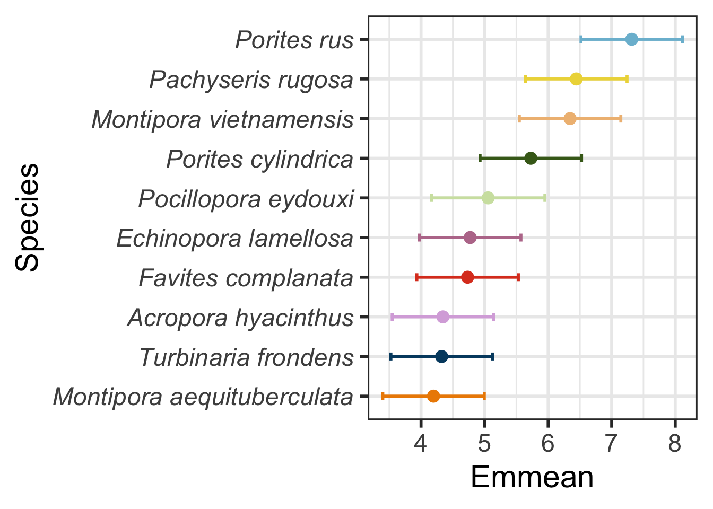
Emmeans comparison and plot
emm_obj <- emmeans::emmeans(chla.sym.spp, ~ full_species)
emm_pairs <- pairs(emm_obj)
#a, ab, ab, abc, abc, bc, c
emm_tbl <- as_tibble(summary(emm_obj, infer = TRUE)) %>% mutate(full_species = fct_reorder(full_species, emmean))
emm_plot <- ggplot(emm_tbl, aes(x = emmean, y = full_species, color = full_species)) +
geom_point() +
geom_errorbar(aes(xmin = lower.CL, xmax = upper.CL), width = 0.2) +
theme_bw(base_size = 22) +
theme(legend.position = "none", axis.text.y = element_text(face = "italic"))+
scale_color_manual(values = sp_cols) +
labs(x = "Emmean", y = "Species")
emm_plot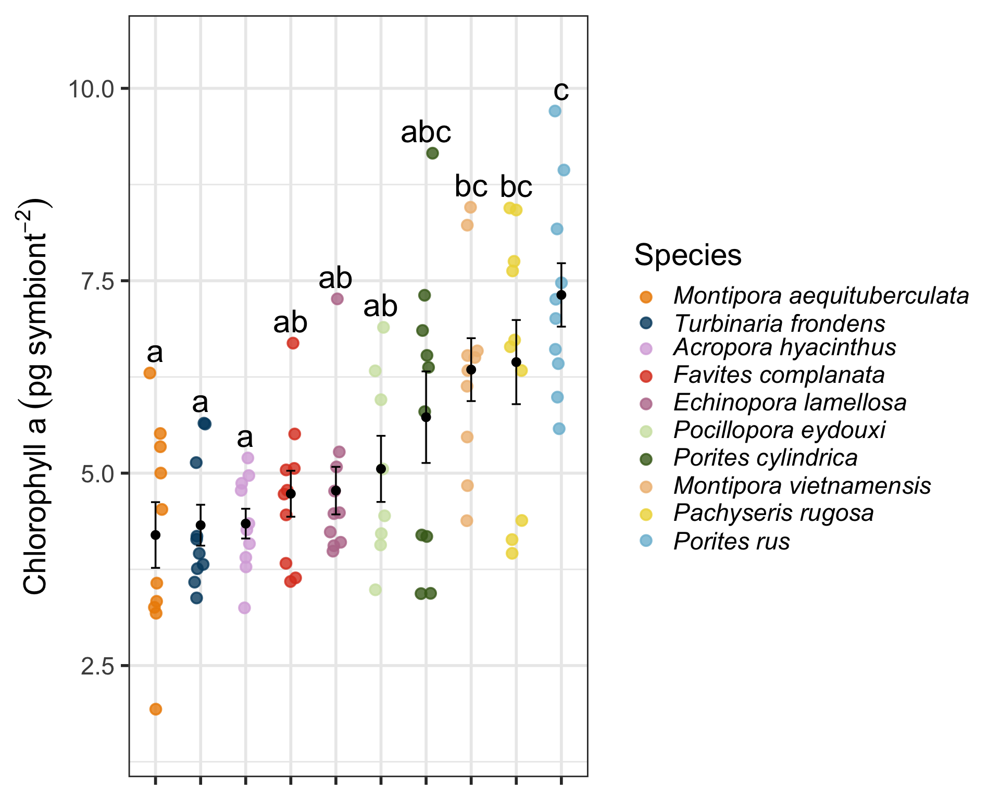
#ggsave(here("Output", "Physiology","chla_sym_emmeans.pdf"), device = "pdf", height = 8, width = 8, emm_plot)Reorder and plot by species
#reorder based on mean values
means <- chla_7sp %>% group_by(species) %>% summarize(m = mean(chla_pg_sym, na.rm = TRUE), .groups = "drop")
chla_7sp_ordered <- chla_7sp %>%
left_join(chla_sym_summary, by = "full_species") %>%
mutate(full_species = fct_reorder(full_species, mean)) # ascending by mean
chla_sym_plot <- ggplot() +
geom_jitter(data = chla_7sp_ordered, aes(x = full_species, y = chla_pg_sym, color = full_species), width = 0.15, alpha = 0.8) +
geom_errorbar(data = chla_sym_summary, aes(x = full_species, ymin = mean - se, ymax = mean + se), width = 0.2, linewidth = 0.6)+
geom_point(data = chla_sym_summary, aes(x = full_species, y = mean), size = 2) +
stat_summary(data = chla_7sp_ordered, aes(x = full_species, y = chla_pg_sym), geom = "text", fun = max, vjust = -0.5, size = 8,
label = c("a", "a", "a", "a", "a", "ab", "b"))+
theme_bw(base_size = 22)+
theme(legend.position = "right", axis.text.x = element_blank(), axis.title.x = element_blank()) +
#theme(legend.position = "none", axis.text.x = element_text(angle = 45, hjust=1, face = "italic")) +
scale_color_manual(values = sp_cols, labels = function(x) parse(text = paste0("italic('", gsub("'", "\\\\'", x), "')")))+
labs(x = "Species", color = "Species", y = expression("Chlorophyll a content" ~ (pg ~ symbiont^{-2}))) +
ylim(0,8)
chla_sym_plot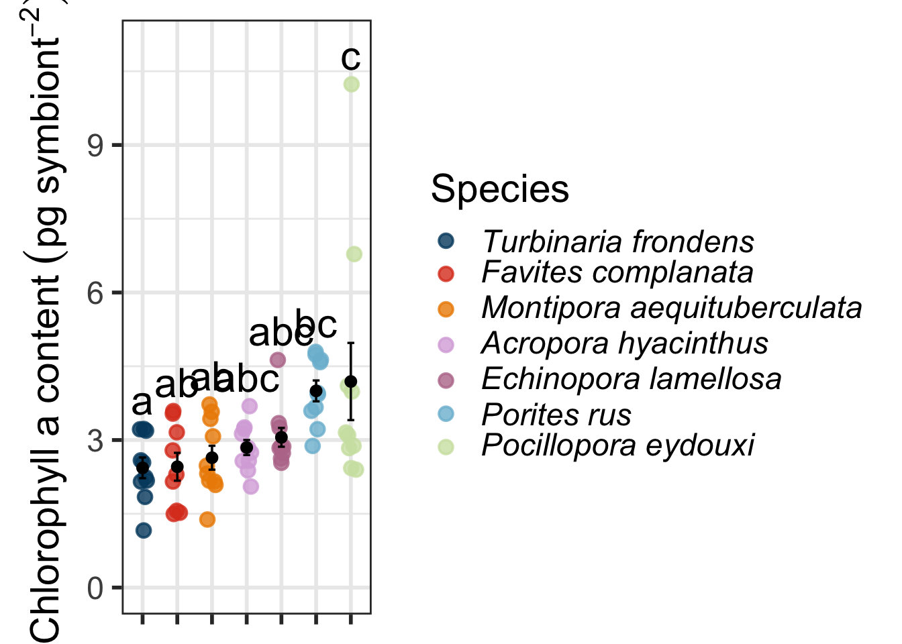
ggsave(here("Output", "Physiology", "chla_sym_species_jitter.pdf"), chla_sym_plot, h = 8, w = 10)Symbiont density
Load data
avg_sym <- read.csv(here("Data", "Physiology", "Average_Sym_Density.csv"))
avg_sym <- avg_sym %>%
filter(frag_ID != "C07") %>%
filter(frag_ID != "D10") #remove crazy outliers!Needed initially to calculate avg per frag sym density
#code to calculate average Symbiont Density per fragment
#needed initially but not after writing average Symbiont Density datasheet
# phys_meta <- read.csv(here("Data", "Physiology", "Physio_meta.csv"))
#
# #read in sym photo id sheet and sym counts
# counts <- read.csv(here("Data", "Physiology", "sym_counts_all.csv"))
# photos <- read.csv(here("Data", "Physiology", "sym_photos_all.csv"))
#
# #combine
# sym_raw <- photos %>% left_join(counts, by = "image_id")
#
# #add together counts from photos from 2 focus settings for photos
# img_rm <- c("P8184974","P8184975","P8184976","P8174396","P8174397","P8174662","P8174663","P8174668","P8174669")
# sym_add <- sym_raw %>%
# group_by(frag_ID,rep) %>% mutate(count_2 = sum(count)) %>%
# filter(image_no == 1) %>% #keep only 1 row of data for each
# filter(!image_id %in% img_rm) #filter out images to remove based on SE >15% of mean (as calculated below)
#
# #average sym counts across 6 reps for each id
# #and calculate SE
# sym_avg <- sym_add %>%
# group_by(frag_ID) %>% mutate(count_avg = mean(count_2)) %>%
# mutate(count_se = sd(count_2)/sqrt(length(count_2))) %>%
# #check to see which have highest error and look at add data for those >15%
# mutate(count_var = count_se/count_avg) %>%
# filter(rep == 6) #keep only one row of data for each
#
# #error >0.15 = C02, E04, H08
# #C02 - one data point is 6 while the others are >50, likely remove - check photos
# #E04 - two counts of 9 and 6, all others >30, likely remove - check photos
# #H08 - two counts in the 300s while all others in the 100s, likely remove - check photos
#
# #now calculate actual symbiont density
# #the 1x1mm grid should be 0.1uL
# #we want cells/mL so 10,000 x our counts (1000uL in a mL/0.1uL = x 10,000)
# #homogenate volume for all is 50mL
# #SA is calculated as well here
# #combine with metadata for calculations
#
# sym <- sym_avg %>%
# select(frag_ID, count_avg) %>% #keep only relevant columns
# left_join(phys_meta, by = "frag_ID") %>% #add metadata
# mutate(sym_mL = count_avg*10000) %>%
# mutate(sym_total = sym_mL*blastate_vol_mL) %>%
# mutate(sym_cm2 = sym_total/SA_cm2)
#
# write.csv(sym, here("Data", "Physiology", "Average_Sym_Density.csv"), row.names = FALSE)Summary data
sym_summary <- avg_sym %>%
group_by(full_species) %>%
summarise(
n = sum(!is.na(sym_cm2)),
mean = mean(sym_cm2, na.rm = TRUE),
se = se_fun(sym_cm2),
.groups = "drop")See if there’s a difference between species
sym.mod.spp <- lm(sym_cm2~full_species, data = avg_sym)
Anova(sym.mod.spp)Anova Table (Type II tests)
Response: sym_cm2
Sum Sq Df F value Pr(>F)
full_species 1.8349e+13 6 7.8194 2.916e-06 ***
Residuals 2.3857e+13 61
---
Signif. codes: 0 '***' 0.001 '**' 0.01 '*' 0.05 '.' 0.1 ' ' 1summary(sym.mod.spp)
Call:
lm(formula = sym_cm2 ~ full_species, data = avg_sym)
Residuals:
Min 1Q Median 3Q Max
-1178482 -434612 -77873 312248 1675535
Coefficients:
Estimate Std. Error t value Pr(>|t|)
(Intercept) 1669683 197761 8.443 7.63e-12 ***
full_speciesEchinopora lamellosa 21615 279676 0.077 0.938650
full_speciesFavites complanata 231577 287340 0.806 0.423411
full_speciesMontipora aequituberculata 162348 279676 0.580 0.563724
full_speciesPocillopora eydouxi -743254 279676 -2.658 0.010035 *
full_speciesPorites rus 439354 287340 1.529 0.131424
full_speciesTurbinaria frondens 1108692 279676 3.964 0.000196 ***
---
Signif. codes: 0 '***' 0.001 '**' 0.01 '*' 0.05 '.' 0.1 ' ' 1
Residual standard error: 625400 on 61 degrees of freedom
Multiple R-squared: 0.4347, Adjusted R-squared: 0.3791
F-statistic: 7.819 on 6 and 61 DF, p-value: 2.916e-06check_model(sym.mod.spp)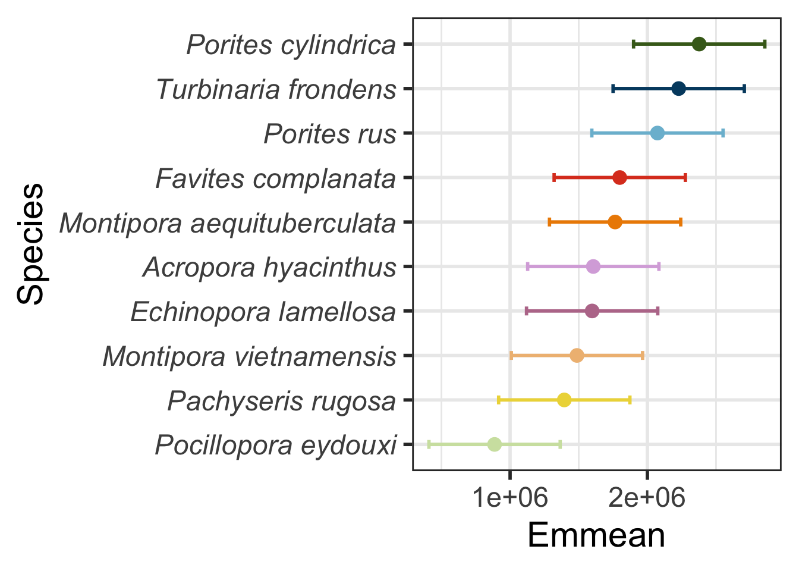
Emmeans comparison and plot
emm_obj <- emmeans::emmeans(sym.mod.spp, ~ full_species)
emm_pairs <- pairs(emm_obj)
#a, ab, ab, b, b, bc, c
emm_tbl <- as_tibble(summary(emm_obj, infer = TRUE)) %>% mutate(full_species = fct_reorder(full_species, emmean))
emm_plot <- ggplot(emm_tbl, aes(x = emmean, y = full_species, color = full_species)) +
geom_point() +
geom_errorbar(aes(xmin = lower.CL, xmax = upper.CL), width = 0.2) +
theme_bw(base_size = 22) +
theme(legend.position = "none", axis.text.y = element_text(face = "italic"))+
scale_color_manual(values = sp_cols) +
labs(x = "Emmean", y = "Species")
emm_plot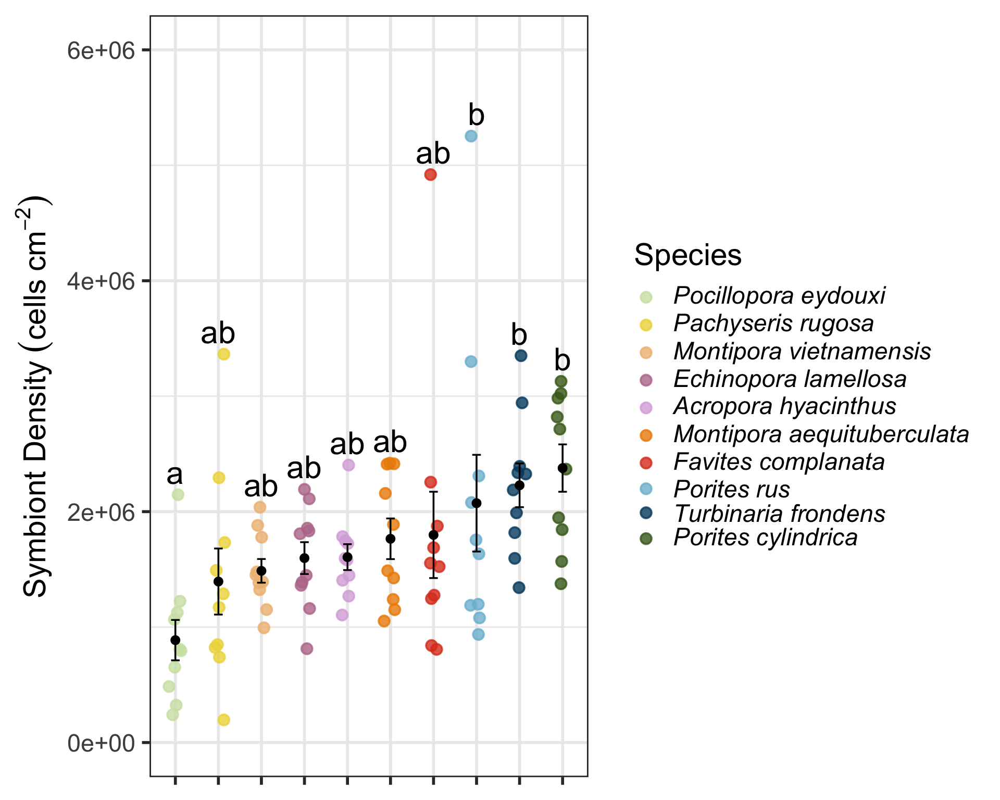
#ggsave(here("Output", "Physiology","sym_emmeans.pdf"), device = "pdf", height = 8, width = 8, emm_plot)Reorder and plot by species
#reorder based on mean values
means <- avg_sym %>% group_by(species) %>% summarize(m = mean(sym_cm2, na.rm = TRUE), .groups = "drop")
avg_sym_ordered <- avg_sym %>% left_join(sym_summary, by = "full_species") %>% mutate(full_species = fct_reorder(full_species, mean)) # ascending by mean
sym_plot <- ggplot() +
geom_jitter(data = avg_sym_ordered, aes(x = full_species, y = sym_cm2, color = full_species), width = 0.15, alpha = 0.8) +
geom_errorbar(data = sym_summary, aes(x = full_species, ymin = mean - se, ymax = mean + se), width = 0.2, linewidth = 0.6) +
geom_point(data = sym_summary, aes(x = full_species, y = mean), size = 2) +
stat_summary(data = avg_sym_ordered, aes(x = full_species, y = sym_cm2), geom = "text", fun = max, vjust = -0.5, size = 8,
label = c("a", "ab", "ab", "b", "b", "bc", "c"))+
theme_bw(base_size = 22) +
theme(legend.position = "right", axis.text.x = element_blank(), axis.title.x = element_blank()) +
#theme(legend.position = "none", axis.text.x = element_text(angle = 45, hjust=1, face = "italic")) +
scale_color_manual(values = sp_cols, labels = function(x) parse(text = paste0("italic('", gsub("'", "\\\\'", x), "')")))+
ylim(0,4800000)+
labs(x = "Species", color = "Species", y = expression("Symbiont Density" ~ (cells ~ cm^{-2})))
sym_plot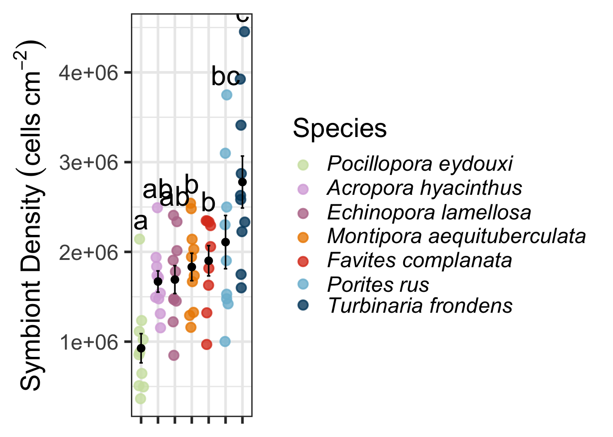
ggsave(here("Output", "Physiology", "sym_species_jitter.pdf"), sym_plot, h = 5, w = 10)
#low sym density but high chla/sym maybe helpful for P eyd here - lots of photosynthesis but lower cell counts = more energy/stores for growthProtein
Load data
prot <- read.csv(here("Data", "Physiology", "protein_all_summary.csv"))Protein summary data
prot_summary <- prot %>%
group_by(full_species) %>%
summarise(
n = sum(!is.na(prot_ug_cm2)),
mean = mean(prot_ug_cm2, na.rm = TRUE),
se = se_fun(prot_ug_cm2),
.groups = "drop")See if there’s a difference between species
prot.mod.spp <- lm(prot_ug_cm2~full_species, data = prot)
Anova(prot.mod.spp)Anova Table (Type II tests)
Response: prot_ug_cm2
Sum Sq Df F value Pr(>F)
full_species 14779176 9 4.9607 2.332e-05 ***
Residuals 28137426 85
---
Signif. codes: 0 '***' 0.001 '**' 0.01 '*' 0.05 '.' 0.1 ' ' 1summary(prot.mod.spp)
Call:
lm(formula = prot_ug_cm2 ~ full_species, data = prot)
Residuals:
Min 1Q Median 3Q Max
-1333.07 -295.57 -79.24 221.21 2326.05
Coefficients:
Estimate Std. Error t value Pr(>|t|)
(Intercept) 1052.27 181.94 5.784 1.19e-07 ***
full_speciesEchinopora lamellosa 120.20 257.30 0.467 0.6416
full_speciesFavites complanata 337.02 297.11 1.134 0.2598
full_speciesMontipora aequituberculata 80.35 257.30 0.312 0.7556
full_speciesMontipora vietnamensis 412.76 257.30 1.604 0.1124
full_speciesPachyseris rugosa 519.14 257.30 2.018 0.0468 *
full_speciesPocillopora eydouxi -428.38 264.36 -1.620 0.1088
full_speciesPorites cylindrica 439.20 257.30 1.707 0.0915 .
full_speciesPorites rus 476.19 257.30 1.851 0.0677 .
full_speciesTurbinaria frondens 1148.94 257.30 4.465 2.44e-05 ***
---
Signif. codes: 0 '***' 0.001 '**' 0.01 '*' 0.05 '.' 0.1 ' ' 1
Residual standard error: 575.4 on 85 degrees of freedom
Multiple R-squared: 0.3444, Adjusted R-squared: 0.2749
F-statistic: 4.961 on 9 and 85 DF, p-value: 2.332e-05check_model(prot.mod.spp)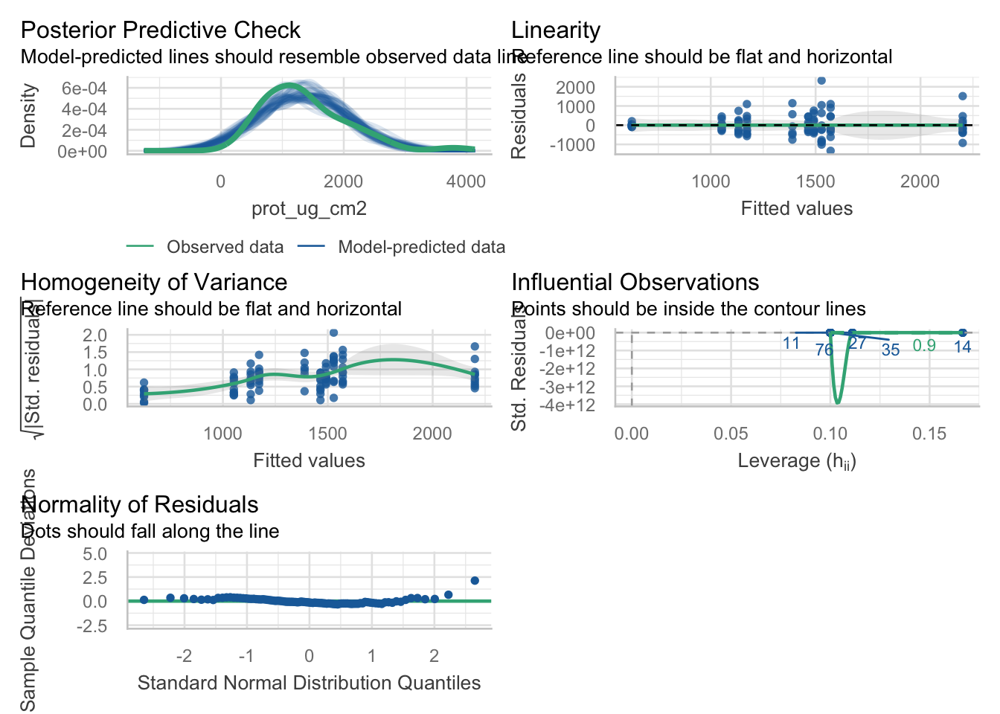
Emmeans comparisons and plot
emm_obj <- emmeans::emmeans(prot.mod.spp, ~ full_species)
emm_pairs <- pairs(emm_obj)
# Acropora hyacinthus - Turbinaria frondens -1148.9 257 85 -4.465 0.0010
# Echinopora lamellosa - Turbinaria frondens -1028.7 257 85 -3.998 0.0050
# Montipora aequituberculata - Turbinaria frondens -1068.6 257 85 -4.153 0.0030
# Pachyseris rugosa - Pocillopora eydouxi 947.5 264 85 3.584 0.0190
# Pocillopora eydouxi - Porites rus -904.6 264 85 -3.422 0.0308
# Pocillopora eydouxi - Porites cylindrica -867.6 264 85 -3.282 0.0457
# Pocillopora eydouxi - Turbinaria frondens -1577.3 264 85 -5.967 <.0001
#a, ab, ab, ab, abc, abc, bc, bc, bc, c
emm_tbl <- as_tibble(summary(emm_obj, infer = TRUE)) %>% mutate(full_species = fct_reorder(full_species, emmean))
emm_plot <- ggplot(emm_tbl, aes(x = emmean, y = full_species, color = full_species)) +
geom_point() +
geom_errorbar(aes(xmin = lower.CL, xmax = upper.CL), width = 0.2) +
theme_bw(base_size = 22) +
theme(legend.position = "none", axis.text.y = element_text(face = "italic"))+
scale_color_manual(values = sp_cols, ) +
labs(x = "Emmean", y = "Species")
emm_plot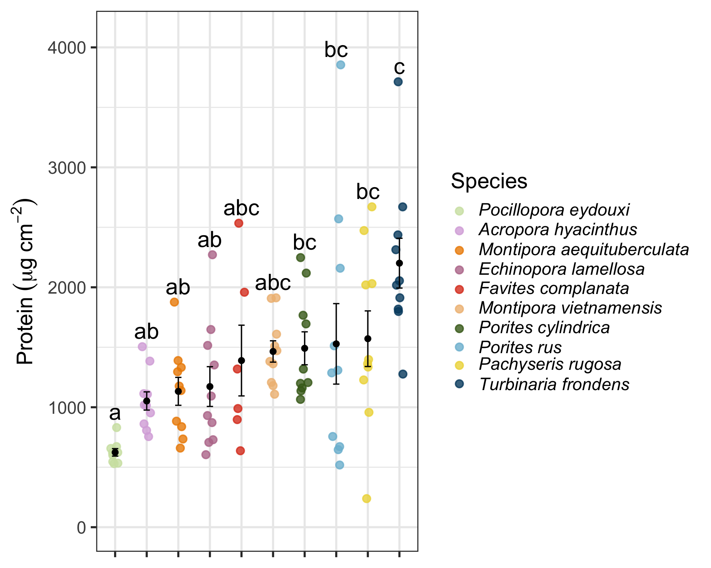
ggsave(here("Output","Physiology","prot_emmeans.pdf"), device = "pdf", height = 8, width = 8, emm_plot)Reorder and plot species comparisons
#reorder based on mean values
means <- prot %>% group_by(species) %>% summarize(m = mean(prot_ug_cm2, na.rm = TRUE), .groups = "drop")
prot_ordered <- prot %>% left_join(prot_summary, by = "full_species") %>% mutate(full_species = fct_reorder(full_species, mean)) # ascending by mean
prot_plot <- ggplot() +
geom_jitter(data = prot_ordered, aes(x = full_species, y = prot_ug_cm2, color = full_species), width = 0.15, alpha = 0.8) +
geom_errorbar(data = prot_summary, aes(x = full_species, ymin = mean - se, ymax = mean + se), width = 0.2, linewidth = 0.6) +
geom_point(data = prot_summary, aes(x = full_species, y = mean), size = 2) +
theme_bw(base_size = 22) +
stat_summary(data = prot_ordered, aes(x = full_species, y = prot_ug_cm2), geom = "text", fun = max, vjust = -0.5, size = 8,
label = c("a", "ab", "ab", "ab", "abc", "abc", "bc", "bc", "bc", "c"))+
#a, ab, ab, ab, abc, abc, bc, bc, bc, c
theme(legend.position = "right", axis.text.x = element_blank(), axis.title.x = element_blank()) +
scale_color_manual(values = sp_cols, labels = function(x) parse(text = paste0("italic('", gsub("'", "\\\\'", x), "')")))+
ylim(0,4100)+
labs(x = "Species", color = "Species",
y = expression("Protein Content" ~ (mu*g ~ cm^{-2})))
prot_plot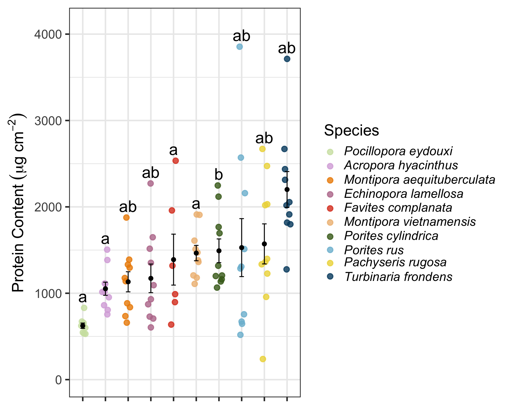
ggsave(here("Output", "Physiology", "prot_species_jitter.pdf"), prot_plot, h = 5, w = 10)All plots together
Put all physio plots together
physio_plots <- ggarrange(chla_plot, chla_sym_plot, sym_plot, dw_plot, prot_plot, nrow = 3, ncol = 2, legend = "right", common.legend = TRUE)
plot(physio_plots)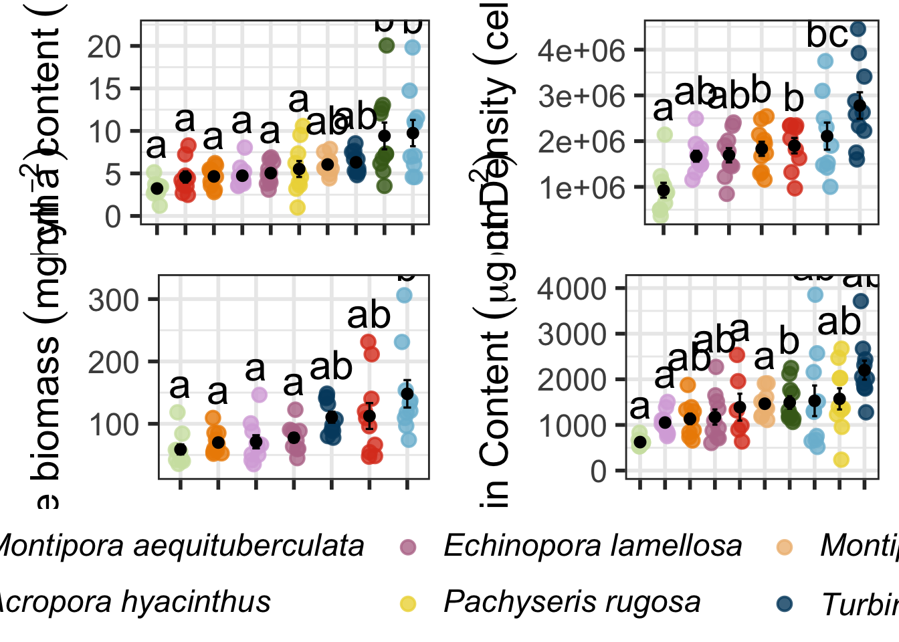
ggsave(here("Output","Physiology","physio_plots.pdf"), physio_plots, h = 15, w = 15)